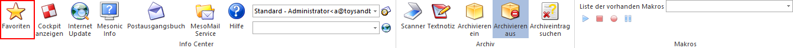
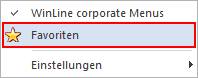
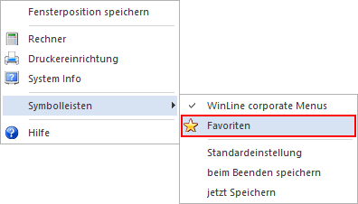
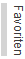
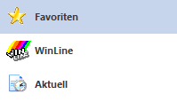
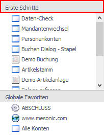
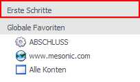

Das Fenster "Favoriten" dient zur schnellen Navigation in der WinLine, sowie zur Bündelung der wichtigsten WinLine Objekte. Das Fenster kann über folgende Wege aufgerufen werden:
ü Ribbon "INFO CENTER UND
MAKROS"
Im Ribbon "INFO CENTER UND MAKROS" steht der Button "Favoriten" für
den Aufruf der Favoriten zur Verfügung.

ü Kontextmenü der rechten Maustaste
(im Ribbon)
In dem Kontextmenü der Ribbons steht der Eintrag "Favoriten" für
den Aufruf der Favoriten zur Verfügung.

ü Kontextmenü einer rechten
Maustaste (in Fensterbereich)
In dem Kontextmenü von Applikation (dort wo
auch Fenster dargestellt werden - außer WinLine START und WinLine INFO) steht
der Eintrag "Symbolleisten - Favoriten" für den Aufruf der Favoriten zur
Verfügung.

Standardmäßig wird das Fenster auf der linken Seite des Bildschirmes platziert. Dieses Fenster kann jedoch auf jeden beliebigen Ort am Bildschirm verschoben werden. Dazu muss der Bereich
Ø
angeklickt werden. Wenn nun die Maustaste geklickt gehalten wird, dann kann das Fenster verschoben werden.
Durch Anklicken des Buttons "Automatisch ausblenden" werden die Favoriten "versteckt", sobald ein anderes Fenster geöffnet ist. In diesem Fall ist dann von den Favoriten nur mehr dieser Teil zu sehen:

Führt man mit der Maus über diesen Bereich, dann werden die Favoriten "ausgefahren" und können normal verwendet werden. Diese "Ausblend-Funktion" hilft dabei, mehr Platz am Bildschirm zu haben, trotzdem aber den Zugriff auf die Favoriten zu ermöglichen. Durch nochmaliges Anklicken des Buttons "Automatisch ausblenden" werden die Favoriten wieder immer dargestellt.
Die Favoriten sind in mehrere Kategorien aufgeteilt, wobei diese wiederum in verschiedene Bereiche unterteilt sind.
Die Kategorien, die im unteren Teil der Favoriten ausgewählt werden können, bestimmen, welche Bereiche angezeigt werden. Die jeweils ausgewählte Kategorie wird farblich unterlegt dargestellt.
Beispiel

In diesem Beispiel ist gerade die Kategorie "Favoriten" aktiv.
Folgende Kategorien sind vorhanden:
ü Favoriten
Individuelle
Einstellungen zur leichten Bedienung des Programms
ü WinLine
Buttons für den Aufruf
der einzelnen Programme bzw. für das Bedienen der Fenster
ü Aktuell
Anzeige der zuletzt
verwendeten Daten (Konten, Artikel), Suchmöglichkeit nach bestimmten Daten.
Jeder Bereich hat eine eigene Überschrift und kann auch versteckt oder angezeigt (ein- oder ausgeschalten) werden, wobei die Überschrift selbst immer sichtbar bleibt.
Standardmäßig werden immer alle Bereiche einer Kategorie angezeigt. Um einen Bereich zu verstecken, muss nur auf den entsprechenden Balken geklickt werden:

Um einen Bereich dann wieder sichtbar zu machen, muss wieder auf den entsprechenden Balken angeklickt werden:

Hinweis
Die jeweils vorgenommenen Einstellungen werden automatisch beim Beenden des Programms gespeichert.